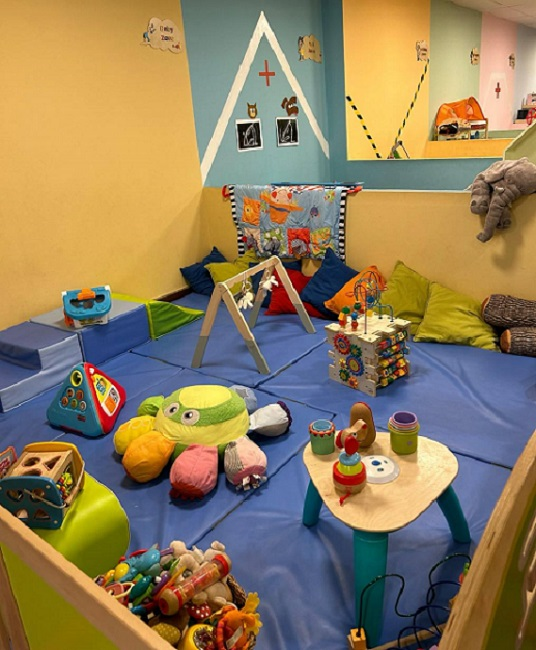
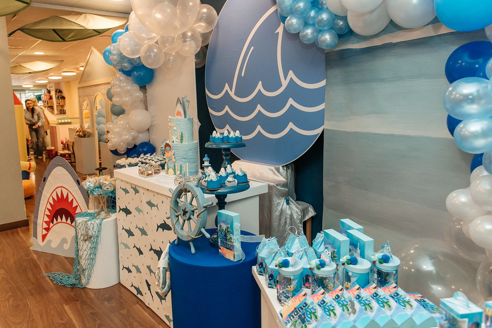

Somos la alternativa para las familias que no tienen plaza de guardería y necesitan trabajar. Dejas a tu peque de 10 a 14 h o de 10 a 16 h y nosotros nos encargamos: monitora especializada y comida incluida. Preinscripciones abiertas — plazas limitadas.

Quedarse sin plaza de escuela infantil no debería dejarte sin opciones. Aquí puedes dejar a tu bebé por la mañana con la tranquilidad de saber que está en buenas manos, rodeado de cariño, juego y estímulos. Un espacio para bebés de 0 a 3 años que funciona como una gran familia.
Materiales, texturas y movimiento a su ritmo, en un centro diseñado con mimo.
Pintar, modelar e inventar historias para expresarse sin juicios.
Atención, memoria y lenguaje en dinámicas participativas y afectivas.
Cumpleaños y encuentros familiares en un entorno seguro y cálido.

Sabemos lo importante que es la conciliación. Puedes elegir mañanas de 10 a 14 h o ampliar hasta las 16 h con la comida incluida. Y si un día se te complica y no llegas a tiempo, estamos abiertos hasta las 20 h. Abrimos los 12 meses del año, también en verano.
Como tú prefieras. Puedes dejarle y marcharte a trabajar: nosotros nos encargamos, y esa es la diferencia principal con los grupos de crianza y los espacios familiares, donde la madre o el padre tiene que quedarse dentro. Tu peque se queda con una monitora especializada y tú dispones de la mañana. Y si un día prefieres quedarte a jugar con él, también puedes: los bonos incluyen dos adultos.
Todas las mañanas de 10 a 14 h, con la opción de ampliar de 10 a 16 h incluyendo la comida. Y si un día no llegas a tiempo a recogerle, el centro está abierto hasta las 20 h.
No. Baby Explorer es la alternativa para las familias que no tienen plaza de guardería o que no quieren una jornada completa. Es un espacio de juego y estimulación para bebés de 0 a 3 años con monitora especializada, en Les Corts, Barcelona.
Sí. En el horario de 10 a 16 h la comida está incluida. Avísanos de cualquier alergia o intolerancia cuando reserves la plaza.
De 0 a 3 años. El programa está diseñado para acompañar el desarrollo del bebé en esa etapa, con juego libre y sensorial, talleres creativos y estimulación cognitiva.
No hace falta. Puedes venir un día suelto, coger un bono de 5 o de 10 sesiones, o el plan mensual si vienes todas las mañanas. Tú eliges, y sin matrícula.
Un día suelto cuesta 25 € en horario de 10 a 14 h, y 43 € de 10 a 16 h con la comida incluida. Si vienes de forma habitual, el plan mensual de mañanas cuesta 140 €, y hay bono de 5 sesiones por 85 € y bono de 10 sesiones por 130 €. No se paga matrícula. Tú decides si le dejas y te vas a trabajar o si te quedas a jugar con él: los bonos incluyen dos adultos.
Sí, abrimos los 12 meses del año, también durante los meses de verano. Es una de las razones por las que muchas familias nos eligen frente a una escuela infantil.
Te ayudaremos a elegir el horario que mejor se adapte a tu familia y te acompañaremos durante todo el proceso de adaptación.